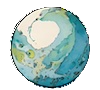

Author: P.Rail
Proofreader: Claude
Release Date: Dec. 2024
Image Concepts: P.Rail 
Character Art: Nuwan Tharaka (Reno)
Backgrounds & Additional Concepts: Dream by WOMBO
Sound effects: Freesound.org
"Sci Fi Transmissions" by secondbody
https://freesound.org/s/614503/
License: Creative Commons 0
"dunes NL March 05 190328_1325.wav" by klankbeeld
https://freesound.org/s/608439/
License: Attribution 4.0
"DSGNDron_Eerie Low Horrible Grinding Drone 1_EM" by newlocknew
https://freesound.org/s/733261/
License: Attribution NonCommercial 4.0
"eerie strings.wav" by ERH
https://freesound.org/s/32899/
License: Attribution NonCommercial 4.0
"Male Dark/Evil Chuckle" by cacti225
https://freesound.org/s/405613/
License: Creative Commons 0
"Gravelanche 2" by jorickhoofd
https://freesound.org/s/169553/
License: Attribution 4.0
"Monster Roar_2.mp3" by mitchanary
https://freesound.org/s/505127/
License: Attribution 4.0
Rockfall in mine.wav by Benboncan
https://freesound.org/s/60085/
License: Attribution 4.0
Grinding Gears and Steady Clinking.wav by Ted_Erski
https://freesound.org/s/535021/
License: Creative Commons 0
Monster Roar_2.mp3 by mitchanary
https://freesound.org/s/505127/
License: Attribution 4.0
"magnetic_valves.wav" by holger.schwetter
https://freesound.org/s/73607/
License: Attribution 3.0
"futuristic sound design.wav" by dflee4
https://freesound.org/s/434137/
License: Creative Commons 0
"BeepBeepBeep (Technology)" by Corruptinator
https://freesound.org/s/586384/
License: Attribution 4.0
"magnetic_valves.wav" by holger.schwetter
https://freesound.org/s/73607/
License: Attribution 3.0
"AMBTech_The Interior Of A Spaceship Or A High-Tech Lab 1_EM" by newlocknew
https://freesound.org/s/724217/
License: Attribution NonCommercial 4.0
"Ship Radar" by Eschwabe3
https://freesound.org/s/459838/
License: Attribution 3.0
"control_room.wav" by Diboz
https://freesound.org/s/211683/
License: Creative Commons 0
"franks lab.mp3" by Zozzy
https://freesound.org/s/56753/
License: Creative Commons 0
"Mud Volcanos - Salton Sea" by RTB45
https://freesound.org/s/415609/
License: Creative Commons 0
"Sleepy Monster Creauture Sound-Design Roar.wav" by szegvari
https://freesound.org/s/609182/
License: Creative Commons 0
"lab_ambience.wav" by saangosu
https://freesound.org/s/688249/
License: Creative Commons 0
"cinematic_deep_tremor.wav" by swiftoid
https://freesound.org/s/119782/
License: Creative Commons 0
"Footsteps Gravel Trainers Running 96Hz 24 Bit.wav" by rjbrown85
https://freesound.org/s/156847/
License: Attribution 4.0
"Water Dripping in Cave.wav" by Sclolex
https://freesound.org/s/177958/
License: Creative Commons 0
"footsteps-wood-bridge-01-walking.wav" by audioninja001
https://freesound.org/s/455068/
License: Creative Commons 0
"185071__oneirophile__swamp-gas-bubbling_Cleaned.wav" by dheming
https://freesound.org/s/198300/
License: Attribution 4.0
"Sinister Piano Melodies" by UNIVERSFIELD
https://freesound.org/s/723973/
License: Attribution 4.0
"Monster growls and snores" by lori.mortimer
https://freesound.org/s/744790/
License: Creative Commons 0
"Orc Grunt 1" by qubodup
https://freesound.org/s/738437/
License: Attribution 4.0
"Orc Grunt 2" by qubodup
https://freesound.org/s/738438/
License: Attribution 4.0
"Orc Grunt 3" by qubodup
https://freesound.org/s/738439/
License: Attribution 4.0
"Lion Grunt.wav" by 8bitmyketison
https://freesound.org/s/699928/
License: Creative Commons 0
"Large Monster Death 02.wav" by Michael Klier
https://freesound.org/s/318320/
License: Attribution 3.0
"06186 mutant short pain roar.WAV" by Robinhood76
https://freesound.org/s/332520/
License: Attribution NonCommercial 4.0
"dragon growl omnious.aiff" by bevibeldesign
https://freesound.org/s/315769/
License: Creative Commons 0
"digital_whoosh_soft.wav" by ludvique
https://freesound.org/s/71852/
License: Creative Commons 0
"paper and hand" by pauliperez1999
https://freesound.org/s/428740/
License: Attribution 3.0
"Video Game Squeak" by Breviceps
https://freesound.org/s/468442/
License: Creative Commons 0
Built using: Inform 7 with Vorple
Audio converter: AudioTrimmer
Audio volume: Web Apps by 123apps
Thanks to freesounds.org for all the cool sound effects.
Our goal with Terra Nova is to provide a captivating interactive fiction experience with engaging images. To achieve this, we opted for cartoon realism, drawing inspiration from classic animated films like Disney's 101 Dalmatians. This choice sets Terra Nova apart, prioritizing stylized visuals and expressive linework over photorealism. This approach allows us to present the fantastical and exciting aspects of the story—from exploring ancient ruins to encountering cyborgs—with a sense of wonder and adventure, avoiding a grim or overly serious tone. During development, we used a range of digital tools, including AI for tasks such as concept art, proofreading, and background generation. These generated elements were refined and integrated with original artwork by humans.
Close this tab to return to the adventure.